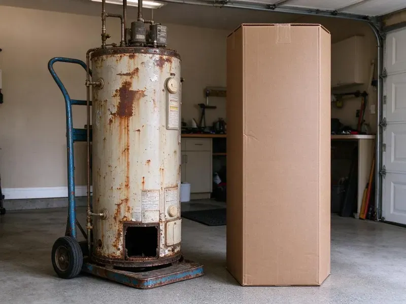

Pipe Replacement in Yuma, AZ
We replace failing water and drain pipes across Yuma, AZ with attic-routed lines, small wall openings and careful cleanup.
- Fast Repipe Scheduling
- PEX-A and Copper Options
- Small, Planned Wall Openings
- Permits and Inspections Handled

New Pipes, Better Pressure, Fewer Surprises in Yuma, AZ.
We cover floors and furniture and clean up at the end of every workday.
Pipe Replacement in Yuma, AZ for Aging and Leaking Plumbing
CVR Plumbing replaces corroded galvanized, brittle polybutylene and leak-prone copper with modern PEX-A or Type L copper. We handle partial replacements, whole-home repipes and drain line upgrades in single-story slab homes and two-story houses alike.
Our expertise includes:
- Whole-home repipes with PEX-A manifolds or copper trunk lines
- Galvanized, polybutylene and pinhole-leak copper replacement
- Cast iron and failing ABS drain line replacement

Additional Plumbing Replacement Services in Yuma, AZ
When repairs are no longer enough, our replacement services in Yuma, AZ deliver modern, efficient equipment installed right.


Customers
Why Choose CVR Plumbing for Pipe Replacement in Yuma, AZ?
Hard water, high street pressure and the thin Type M copper used in many tract homes lead to recurring pinhole leaks. Once a home has had two or three, a planned repipe usually costs less than chasing leaks one at a time.
- Proven Materials, We install PEX-A from Uponor or Rehau and Type L copper, both rated for decades of service.
- Clean Jobsites, We protect floors and furniture and leave the house clean at the end of each day.
- Tested Systems, Every repipe is pressure tested and inspected before walls are closed.
Citywide Coverage
We replace pipes in every neighborhood of Yuma, from 1960s block homes with galvanized lines to 1990s builds with failing polybutylene. Single-story and two-story homes are both routine work for us.
Experienced Team
Our plumbers have repiped many slab homes and know how to route lines through attics, closets and interior walls efficiently. They plan every drop before cutting so drywall repair stays small.
Safety-First Approach
Attic lines are insulated and protected from summer heat, and any exterior PEX is shielded from UV exposure. We test the entire system under pressure before restoring service.
Trusted Certified Yuma Plumbing Services Professionals
At CVR Plumbing, we take pride in providing licensed, certified plumbing services throughout Yuma, AZ. Backed by recognized industry credentials, our experienced plumbers combine technical skill with genuine customer care. Whether it is repair, installation, or maintenance, we follow strict safety and quality standards to deliver lasting results you can trust.
Call Us Now PHCC Plumbing Contractor Recognition
PHCC Plumbing Contractor Recognition Better Business Bureau (BBB) Accreditation
Better Business Bureau (BBB) Accreditation Angi Certified Pro
Angi Certified Pro ISO 9001 Quality Management Certification
ISO 9001 Quality Management CertificationQuality Pipe Replacement Services in Yuma, AZ
Whole-Home Repiping in Yuma
A whole-home repipe replaces every hot and cold supply line from the main shutoff to each fixture. In most slab homes we abandon the under-slab lines and run new pipe through the attic, dropping into walls at each sink, tub and toilet. New shutoff valves and supply lines are installed at every fixture. A typical three-bedroom, two-bath home takes two to four days. We restore water each evening and patch drywall openings at the end.

Galvanized Pipe Replacement in Yuma, AZ
Galvanized steel pipe rusts from the inside out, slowly narrowing until a half inch line flows like a straw. Signs include brown water after vacations, weak pressure at upstairs fixtures and leaks at threaded joints. Many Arizona homes built before the mid-1970s still have galvanized supply lines. We replace them with PEX or copper and remove the restriction for good. Most homeowners notice the pressure difference the same day.
Polybutylene Pipe Replacement in Yuma
Gray polybutylene pipe was installed in many homes from the late 1970s into the mid-1990s. It breaks down from the inside when exposed to chlorinated water, and fittings can crack without warning. Some insurers raise premiums or decline coverage on homes that still have it. We remove polybutylene supply lines and replace them with PEX-A or copper. A completed repipe can also help when selling the home.
Copper Pinhole Leak Replacement in Yuma, AZ
Pinhole leaks in copper usually start as a small green stain or a damp spot on drywall. They are caused by a mix of water chemistry, high velocity and thin Type M pipe, and once they begin they tend to keep appearing. Patching each leak costs $300 to $800 per visit plus drywall repair. We can replace the affected branch or repipe the home with PEX, which does not develop pinholes. We help you compare the cost of both paths.
PEX Repiping in Yuma
PEX-A is flexible, resists scale buildup and expands slightly if water freezes, which helps in higher elevation homes. We use expansion fittings that keep the full inside diameter of the pipe for better flow. Systems can be run as a home-run manifold with a shutoff for each fixture or as a trunk and branch layout. PEX installs faster than copper with far fewer fittings in the walls. It is our most requested repipe material.
Drain Pipe Replacement in Yuma, AZ
Cast iron drain pipe in older homes can rust through at the bottom, while some ABS from the 1980s was made with defective resin that cracks. Signs include sewer odors, slow drains and stains on ceilings below upstairs bathrooms. We camera the line first, then replace accessible sections with PVC or ABS. Under-slab drains can be tunneled, rerouted or lined depending on location. We explain the options with the camera footage in hand.
Commercial Pipe Replacement in Yuma
Offices, retail spaces and multi-unit buildings often need repiping done in phases so tenants keep water. We plan work by floor or by riser and schedule shutdowns after hours when possible. Larger copper or PEX trunk lines are sized for the building's fixture count. We coordinate permits, inspections and communication with property managers. Phased work keeps the building running while the plumbing is upgraded.

Emergency Pipe Replacement in Yuma, AZ
A burst or badly leaking pipe can soak drywall, flooring and cabinets within minutes. Shut off the main valve, usually found near the front hose bib or in the garage, and call (928) 470-9009. We stop the leak, replace the damaged section and test the rest of the line. If the pipe is failing throughout the home, we discuss a planned repipe instead of more patches. Fast response keeps water damage to a minimum.
Pipe Replacement Near Me in Yuma, AZ
If you are searching for pipe replacement near me, you want a local plumber who knows how homes in your area were built. CVR Plumbing serves Yuma with repipe crews who understand slab foundations, attic routing and local inspection requirements. We can usually inspect and quote within a few days.
A nearby team also means faster response if a leak shows up before your scheduled repipe. We can patch the immediate problem and fold it into the larger project. Call us for a clear, written estimate.
CVR Plumbing at a Glance
- Fully licensed plumbing team covering Yuma, AZ
- Same-day appointments and 24/7 emergency response
- Clear written estimates, no hidden fees
- 4.8-star rated by 713+ Arizona customers
Yuma Map
Yuma Information
- Population
- 100,858
- Area codes
- 928/520/619
- Service area
- Yuma and communities within 40 miles
- Nearby
- Buckeye, Goodyear, Lake Havasu City, Avondale
Slab foundations, hard water and aging galvanized, polybutylene and thin copper lines make planned pipe replacement a smart upgrade for homes in Yuma, AZ.
Expert Services
Trust our professionals for reliable CVR Plumbing solutions in Yuma, AZ.
Our Specialized Plumbing Services in Yuma, AZ
At CVR Plumbing, we provide a complete range of plumbing services across Yuma, AZ. From leak detection to full system installations, our team ensures fast, precise, and affordable service for both residential and commercial properties. Explore our core services below:


How Our Pipe Replacement Process Works in Yuma, AZ
Here is how we take your home from leaking pipes to a fully tested new system.
Request a Quote
Call (928) 470-9009 and tell us about leaks, pressure or water color problems. We schedule an in-home inspection.
Inspect and Plan
We identify your pipe materials and map routes through the attic and walls. You get a written quote with materials, timeline and patching plan.
Replace and Test
We install the new lines, pressure test the system and pass inspection. Then we patch openings and clean up.
Frequently Asked Questions About Pipe Replacement in Yuma
A whole-home PEX repipe for a typical single-story home usually costs $5,000 to $12,000, while copper repipes and larger homes can run $10,000 to $18,000. Replacing a single section or branch line often costs $500 to $3,000. We give a written price after inspection.
We provide a written labor warranty on every repipe. PEX manufacturers typically offer 25 year material warranties when installed by a licensed plumber.
We install PEX-A from brands like Uponor and Rehau, plus Type L copper. Both are code approved and built to last for decades.
Yes, most homeowners stay home during the project. Water is off only during working hours, and we keep work areas clean and safe.
Small accessible repairs may be possible for experienced DIYers. Whole-home repiping requires proper tools, code knowledge, permits and inspection.
Most openings are small, often six by twelve inches, at each fixture location. Routing through the attic keeps the number of openings low, and patching is included in our quote.
Repeated leaks, rusty or brown water, low pressure and old materials like galvanized or polybutylene are the most common signs. Green stains on copper fittings also point to corrosion.
PEX is more flexible, resists scale and does not develop pinhole leaks. Copper is rigid, heat tolerant and preferred by some homeowners, so we price both.
What People Are Saying About Our Plumbing Experts?

Patricia H.
We had a slab leak that two other companies could not find. CVR Plumbing located it in under an hour, explained our options, and the price matched the quote to the dollar.
Slab Leak Repair · Yuma, AZ
Laura S.
I scheduled a water heater replacement, and the team made the process smooth and affordable. The new unit works perfectly, and they cleaned up after completing the job.
Water Heater Replacement · Goodyear, AZSofia M.
Two new toilets installed in one visit, no mess left behind, and the tech even adjusted a faucet he noticed was dripping. Fair pricing and really friendly.
Toilet Installation · Surprise, AZ
Daniel K.
A pipe burst at 11 pm and they actually answered. The plumber showed up within the hour, shut everything down, and had us back to normal the next morning. Could not ask for more.
Emergency Plumbing · Surprise, AZ
Emily R.
I called CVR Plumbing for plumbing repair, and the technician was fast, polite, and thorough. They explained the problem clearly and fixed it the same day. I will definitely hire them again. Highly recommended!
Plumbing Repair · Avondale, AZ
James P.
Our commercial plumbing system had a leak under the sink, and CVR Plumbing handled it professionally. The plumbers arrived quickly and restored everything without disruption to our customers.
Commercial Plumbing · Avondale, AZ